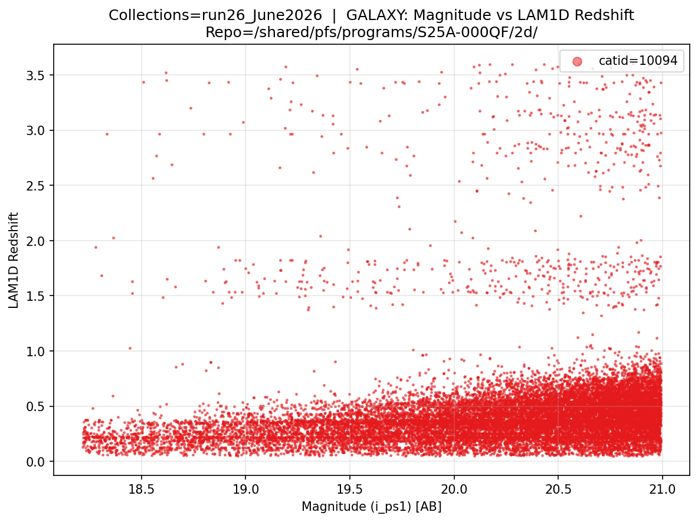
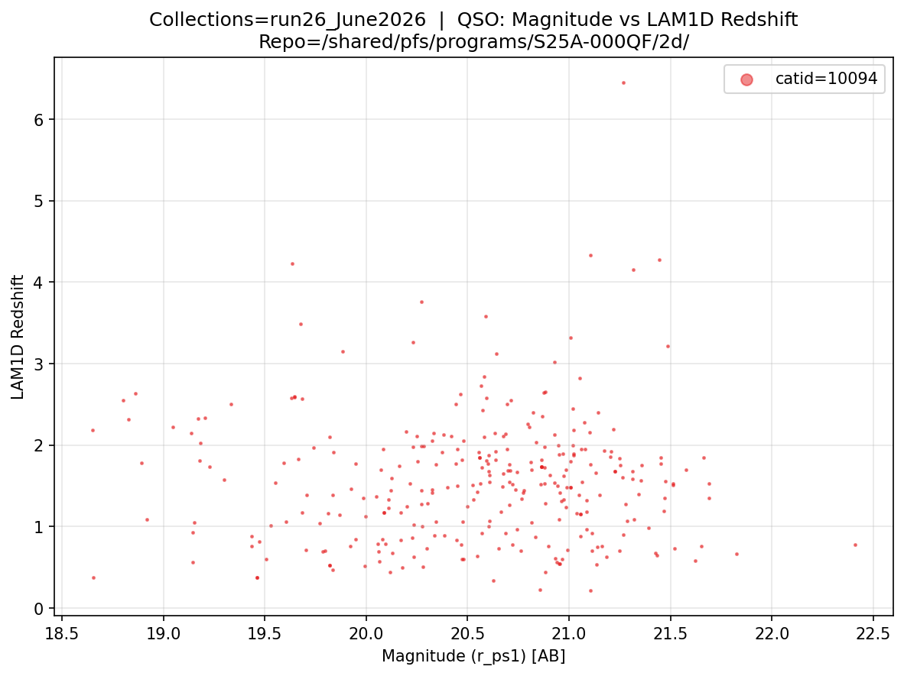
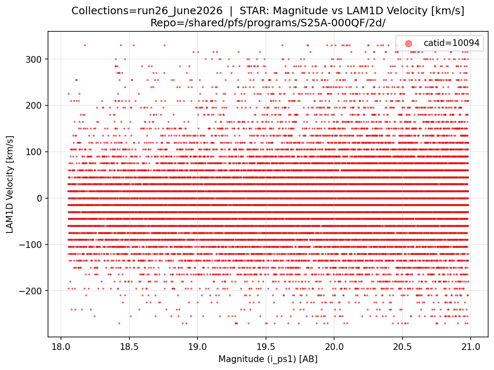

pfsCoZCandidates
Overview
pfsCoZCandidates is the LAM 1D output file. It bundles redshift candidates, classification results, line measurements, and quality flags for all objects in a single catalog (catId), following the same pfsCoadd structure.
The LAM 1D pipeline is run on each pfsCoadd file, i.e. one pfsCoZCandidates file is produced per combination/catId/objGroup combination (see the pfsCoadd section). The files are stored inside the Butler repository and follow the same combination structure as pfsCoadd.
Filename format: pfsCoZCandidates_PFS_{combination}_{catId}_{objGroup}_{collection}_{lam1d_collection}.fits
Example from proposal S25A-000QF, catId 10094 (brn_run26 combination, 22 object groups):
/shared/pfs/programs/S25A-000QF/2d/run26_June2026/lam1d_modified/pfsCoZCandidates/10094/
pfsCoZCandidates_PFS_brn_run26_10094_1_run26_June2026_lam1d_modified.fits
pfsCoZCandidates_PFS_brn_run26_10094_2_run26_June2026_lam1d_modified.fits
...
pfsCoZCandidates_PFS_brn_run26_10094_22_run26_June2026_lam1d_modified.fits
- Flux units for line measurements are nJy (continuum) and 10⁻³⁵ W/m² (line flux).
- For each object a GALAXY, QSO and STAR template is fit, with the best indicated by the
classcolumn in theCLASSIFICATIONHDU. - Each object can have multiple redshift candidates; the best is indicated by
cRank=0in the objectCANDIDATESHDUs.
Filename format: {path_to_pfsCoZCandidates}/{catId}_{objGroup}/data/pfsCoZcandidates-{catId}.fits
FITS structure:
| HDU | Name | Type | Description |
|---|---|---|---|
| #0 | PDU | Header | Version keywords (D1D_VER, D1DP_VER, etc.) |
| #1 | TARGET | Binary table | Object identifiers (targetId, catId, objId, ra, dec, targetType) |
| #2 | WARNINGS | Binary table | Per-solver warning bitmasks |
| #3 | ERRORS | Binary table | Per-solver error codes and messages |
| #4 | CLASSIFICATION | Binary table | Best classification (GALAXY/QSO/STAR) with probabilities |
| #5 | GALAXY_CANDIDATES | Binary table | Galaxy redshift candidates (ranked) |
| #6 | GALAXY_MODELS | Image/table | Best-fit galaxy model spectra (nJy) |
| #7 | GALAXY_REDSHIFT_GRID | Binary table | Redshift grid used for galaxy PDF |
| #8 | GALAXY_LN_PDF | Image | ln(probability) marginalised over galaxy templates |
| #9 | GALAXY_LINES | Binary table | Galaxy emission/absorption line measurements |
| #10 | QSO_CANDIDATES | Binary table | QSO redshift candidates (ranked) |
| #11 | QSO_MODELS | Image/table | Best-fit QSO model spectra (nJy) |
| #12 | QSO_REDSHIFT_GRID | Binary table | Redshift grid used for QSO PDF |
| #13 | QSO_LN_PDF | Image | ln(probability) marginalised over QSO templates |
| #14 | QSO_LINES | Binary table | QSO emission/absorption line measurements |
| #15 | STAR_CANDIDATES | Binary table | Stellar radial velocity candidates (ranked) |
| #16 | STAR_MODELS | Image/table | Best-fit stellar model spectra (nJy) |
| #17 | STAR_VELOCITY_GRID | Binary table | Velocity grid used for stellar PDF |
| #18 | STAR_LN_PDF | Image | ln(probability) marginalised over stellar templates |
| #19 | QUALITY | Binary table | Quality metrics (OII doublet SNR, valid pixel count, etc.) |
Key Columns
CLASSIFICATION (HDU #4):
| Column | Type | Description |
|---|---|---|
targetId |
16-bit INT | Links to TARGET HDU |
class |
STRING | Best classification: GALAXY, QSO, or STAR |
probaGalaxy |
FLOAT | Probability of being a galaxy |
probaQSO |
FLOAT | Probability of being a QSO |
probaStar |
FLOAT | Probability of being a star |
GALAXY_CANDIDATES (HDU #5) — key columns:
| Column | Type | Description |
|---|---|---|
cRank |
32-bit INT | Candidate rank; 0 = best |
redshift |
32-bit FLOAT | Best-fit redshift |
redshiftError |
32-bit FLOAT | Redshift uncertainty |
redshiftProba |
32-bit FLOAT | PDF peak area (dz = ±3×10⁻³) |
subClass |
STRING | Sub-classification |
continuumFile |
STRING | Continuum template used |
The same ranked-candidate structure applies to QSO_CANDIDATES (HDU #10) and STAR_CANDIDATES (HDU #15), with velocity replacing redshift for stars.
Build LAM 1D Object Table & Plot Magnitude vs Redshift/Velocity
The following code builds a combined object table across all LAM 1D results in a collection with the best object classification and redshift/velocity values as indicated by the pipeline. It works in three steps:
- Magnitude lookup — iterates over all visits in the
collectionviapfsMerged, extracting per-object magnitudes frompfsConfigacross all available filters. - LAM 1D FITS reading — reads all
pfsCoZCandidatesFITS files from for a givencollection, extracting the best object classification, best redshift/velocity candidate (by highest probability), warnings, and errors for each object. - Combining and saving — merges the magnitude lookup with the LAM 1D results into a single CSV file (
{collections}_all_lam1d.csv), which can be used to browse objects by class, redshift, velocity, or objId
After saving the CSV, the code plots magnitude vs. redshift (for GALAXY and QSO) and magnitude vs. velocity (for STAR), coloured by catId.
import numpy as np
import pandas as pd
import matplotlib.pyplot as plt
from lsst.daf.butler import Butler
from pfs.datamodel import TargetType
# ==== USER-DEFINED PARAMETERS ====
repo = "/shared/pfs/programs/S25A-000QF/2d/"
collections = "run26_June2026"
collections_lam1d = "run26_June2026/lam1d_modified" # LAM1D collection name
# ==== FIND OBJECT MAGNITUDES ====
butler = Butler(repo, collections=[collections, collections_lam1d])
all_visits = sorted({ref.dataId['visit'] for ref in butler.registry.queryDatasets('pfsMerged')})
print(f"Building magnitude lookup from {len(all_visits)} visits...")
mag_lookup = {}
for i, visit in enumerate(all_visits):
print(f" Visit {i+1}/{len(all_visits)}: {visit} ({len(mag_lookup)} unique objects so far)", end='\r', flush=True)
pfsConfig = butler.get('pfsConfig', dict(visit=visit))
sci = pfsConfig.select(targetType=TargetType.SCIENCE, fiberStatus=1)
if len(sci.objId) == 0:
continue
total_flux = np.array([list(f) for f in sci.totalFlux], dtype=float)
psf_flux = np.array([list(f) for f in sci.psfFlux], dtype=float)
flux = np.where((total_flux > 0) & np.isfinite(total_flux), total_flux, psf_flux)
with np.errstate(divide='ignore', invalid='ignore'):
mags = np.where(flux > 0, -2.5 * np.log10(flux) + 31.4, np.nan)
for j, oid in enumerate(sci.objId):
oid_int = int(oid)
if oid_int not in mag_lookup:
obj_filters = list(sci.filterNames[j])
seen, obj_cols = {}, []
for fn in obj_filters:
count = seen.get(fn, 0)
obj_cols.append(f'mag_{fn}_{count}' if count > 0 or obj_filters.count(fn) > 1 else f'mag_{fn}')
seen[fn] = count + 1
mag_lookup[oid_int] = {col: mags[j, k] for k, col in enumerate(obj_cols)}
print() # clear the \r line
mag_df = pd.DataFrame([{'objId': oid, **m} for oid, m in mag_lookup.items()])
mag_cols_all = [col for col in mag_df.columns if col.startswith('mag_')]
empty_cols = [col for col in mag_cols_all if mag_df[col].isna().all()]
mag_df = mag_df.drop(columns=empty_cols)
mag_cols = [col for col in mag_cols_all if col not in empty_cols]
print(f"Magnitude lookup complete: {len(mag_df)} unique objects | Filters: {mag_cols}")
# ==== READ LAM1D VIA BUTLER ====
refs = list(butler.registry.queryDatasets('pfsCoZCandidates'))
print(f"Reading LAM1D from {len(refs)} pfsCoZCandidates files via Butler...")
all_final_dfs = []
n_skipped = 0
for i, ref in enumerate(refs):
cat_id = ref.dataId['cat_id']
obj_group = ref.dataId['obj_group']
print(f" Processing file {i+1}/{len(refs)} ({n_skipped} skipped)", end='\r', flush=True)
try:
coZCands = butler.get('pfsCoZCandidates', ref.dataId)
except Exception as e:
print(f"\n Failed cat_id={cat_id} obj_group={obj_group}: {e}")
n_skipped += 1
continue
records = []
for target in coZCands:
zc = coZCands[target]
nan = float('nan')
rec = {
'objId': int(target.objId),
'catid': cat_id,
'obj_group': obj_group,
'combination': ref.dataId['combination'],
'class': zc.classification.name,
'probaGalaxy': next((float(v) for k, v in zc.classification.probabilities.items() if k.upper() == 'GALAXY'), nan),
'probaQSO': next((float(v) for k, v in zc.classification.probabilities.items() if k.upper() == 'QSO'), nan),
'probaStar': next((float(v) for k, v in zc.classification.probabilities.items() if k.upper() == 'STAR'), nan),
}
try:
gp = zc.galaxy.parameters[0]
rec['redshift_gal'] = gp.get('redshift', nan)
rec['redshiftProba_gal'] = gp.get('redshiftProba', nan)
except (IndexError, AttributeError, TypeError):
rec['redshift_gal'] = rec['redshiftProba_gal'] = nan
try:
qp = zc.qso.parameters[0]
rec['redshift_qso'] = qp.get('redshift', nan)
rec['redshiftProba_qso'] = qp.get('redshiftProba', nan)
except (IndexError, AttributeError, TypeError):
rec['redshift_qso'] = rec['redshiftProba_qso'] = nan
try:
sp = zc.star.parameters[0]
rec['velocity_star'] = sp.get('velocity', nan)
rec['templateProba_star'] = sp.get('templateProba', nan)
except (IndexError, AttributeError, TypeError):
rec['velocity_star'] = rec['templateProba_star'] = nan
records.append(rec)
if records:
all_final_dfs.append(pd.DataFrame(records))
if not all_final_dfs:
raise ValueError("No data found — check collections and lam1d collection name.")
print() # clear the \r line
print(f"Processed {len(all_final_dfs)} files ({n_skipped} skipped)")
# ==== COMBINE AND ATTACH MAGNITUDES ====
combined_df = pd.concat(all_final_dfs, ignore_index=True)
combined_df = combined_df.merge(mag_df[['objId'] + mag_cols], on='objId', how='left')
matched = combined_df[mag_cols].notna().any(axis=1).sum()
print(f"Magnitudes matched: {matched} / {len(combined_df)} objects")
# ==== AUTO-CORRECT VELOCITY UNITS IF NEEDED ====
# The datamodel specifies km/s, but older releases used m/s. If the median absolute
# stellar velocity is >> 500 km/s, it is almost certainly stored in m/s and is corrected.
star_mask = combined_df['class'].str.upper() == 'STAR'
if star_mask.any():
median_vel = combined_df.loc[star_mask, 'velocity_star'].abs().median()
if median_vel > 5000:
print(f"Auto-correcting velocity units: median |velocity|={median_vel:.0f} → likely m/s, dividing by 1000")
combined_df.loc[star_mask, 'velocity_star'] = combined_df.loc[star_mask, 'velocity_star'] / 1000
# ==== SAVE ====
combined_df.to_csv(f'{collections}_all_lam1d.csv', index=False)
print(f"Saved {collections}_all_lam1d.csv ({len(combined_df)} objects)")
# ==== CLASS BREAKDOWN ====
print("\nClass breakdown:")
for cls in sorted(combined_df['class'].str.upper().unique()):
n = (combined_df['class'].str.upper() == cls).sum()
print(f" {cls}: {n} objects")
# ==== PLOTS: MAG VS REDSHIFT / VELOCITY PER CLASS ====
plot_config = [
("GALAXY", "redshift_gal", "LAM1D Redshift", 1),
("QSO", "redshift_qso", "LAM1D Redshift", 1),
("STAR", "velocity_star", "LAM1D Velocity [km/s]", 1),
]
unique_catids = sorted(combined_df['catid'].unique())
colors = plt.cm.Set1(np.linspace(0, 1, max(len(unique_catids), 3)))
catid_colors = dict(zip(unique_catids, colors))
for class_name, y_col, y_label, y_scale in plot_config:
df_cls = combined_df[combined_df['class'].str.upper() == class_name].copy()
if df_cls.empty:
print(f"No {class_name} objects, skipping plot.")
continue
best_mag_col = df_cls[mag_cols].notna().sum().idxmax()
filter_label = best_mag_col.replace('mag_', '')
mag_vals = df_cls[best_mag_col]
y_vals = df_cls[y_col] * y_scale
mag_lo, mag_hi = np.nanpercentile(mag_vals.dropna(), [1, 99])
y_lo, y_hi = np.nanpercentile(y_vals.dropna(), [1, 99])
plot_mask = (
mag_vals.between(mag_lo, mag_hi) &
y_vals.between(y_lo, y_hi)
)
df_plot = df_cls[plot_mask]
plt.figure(figsize=(8, 6))
for cid in unique_catids:
df_cid = df_plot[df_plot['catid'] == cid]
if df_cid.empty:
continue
plt.scatter(df_cid[best_mag_col], df_cid[y_col] * y_scale, s=2, alpha=0.5,
color=catid_colors[cid], label=f'catid={cid}')
plt.xlabel(f'Magnitude ({filter_label}) [AB]')
plt.ylabel(y_label)
plt.title(f'Collections={collections} | {class_name}: Magnitude vs {y_label}\nRepo={repo}')
plt.legend(loc='upper right', markerscale=5)
plt.grid(True, alpha=0.3)
plt.tight_layout()
plt.savefig(f'{collections}_{class_name}_mag_vs_{y_col}.png', dpi=150, bbox_inches='tight')
plt.show()
Output:
Building magnitude lookup from 426 visits...
Visit 426/426: 139726 (42558 unique objects so far)
Magnitude lookup complete: 42558 unique objects | Filters: ['mag_g_ps1', 'mag_r_ps1', 'mag_i_ps1', 'mag_z_ps1', 'mag_y_ps1']
Reading LAM1D from 32 pfsCoZCandidates files via Butler...
Processing file 32/32 (0 skipped)
Processed 32 files (0 skipped)
Magnitudes matched: 44333 / 44333 objects
Saved run26_June2026_all_lam1d.csv (44333 objects)
Class breakdown:
GALAXY: 20044 objects
QSO: 309 objects
STAR: 23980 objects


